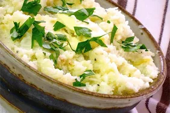

Cauliflower

Garlic Mashed Cauliflower
Are you looking for a low carb alternative to the traditional mashed potato recipe? This garlic mashed cauliflower recipe is a healthy and tasty replacement.
The recipe makes 4 servings. The prep time is 15 minutes. The cook time is 10 minutes. For a total time of 25 minutes. Yum!
Ingredients
- 1 head of cauliflower, cut into florets
- 1 tablespoon of olive oil
- 1 clove garlic, mashed
- 1/4 cup grated parmesean cheese
- 1 table spoon of reduced-fat cream cheese
- 1/2 teaspoon of kosher salt
- 1/8 teaspoon of ground pepper
Steps
- Place a steamer insert into a saucepan; fill with water just below the bottom of the steamer.
- Bring water to a boil; add cauliflower, cover, and steam until tender, about 10 minutes.
- Meanwhile, heat olive oil in a small skillet over medium heat; cook and stir garlic until softened, about 2 minutes. Remove from heat.
- Transfer 1/2 of the cauliflower to a food processor; cover and blend on high.
- Add remaining cauliflower florets, one at a time, until vegetables are creamy.
- Blend in cooked garlic, Parmesan cheese, cream cheese, salt, and black pepper.